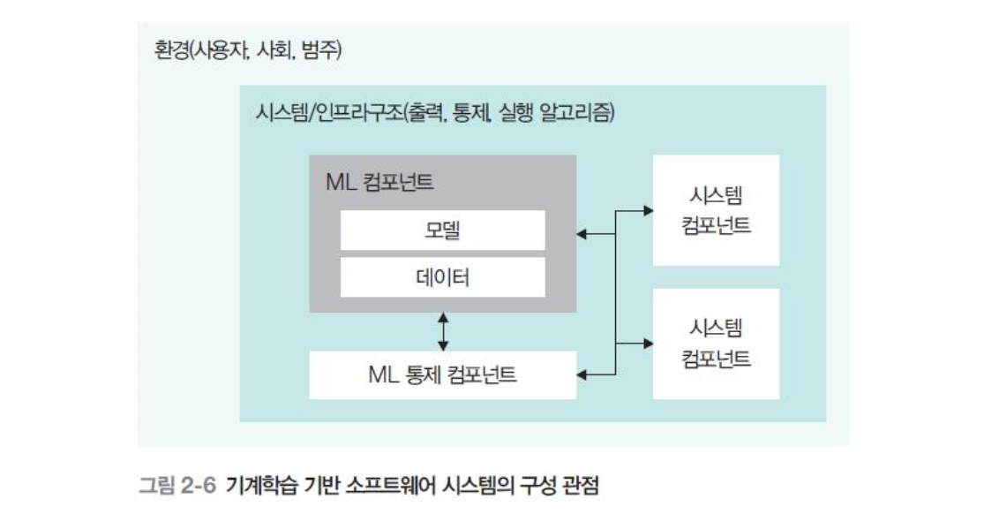

02 인공지능 소프트웨어 품질¶
기계학습 기반 시스템¶
학습 알고리즘 혹은 학습 모델을 따르는 하나 이상의 소프트웨어 컴포넌트를 포함한 학습 기반 시스템
전통적인 소프트웨어와의 차이점
전통 소프트웨어는 같은 입력에 항상 같은 출력이 나오지만 인공지능 소프트웨어는 같은 입력이어도 출력이 달라진다.
왜 이런 결과가 나왔는지 파악하기 어렵고, 데이터에 편향이 있으면 출력도 편향된다.
인공지능 소프트웨어의 품질 특성¶
| 요소 | 설명 |
|---|---|
| 투명성 | 입력에 대한 결과 값 재현 |
| 책임 | 출력이 왜 그렇게 나왔는지 해석하고 설명할 수 있는가 |
| 다양성·공정성 | 특정 요소에 편중하여 출력 제공하면 안됨 |
| 보안과 안전성 | 데이터가 좋은 품질·무결성을 가져야함, 노이즈나 악의적 데이터 대처 |
| 견고성과 신뢰성 | 유해하거나 예상 못한 입력에 대해서도 믿을 만한 결과 제공 |
| 법적·윤리적 측면 | 인간에게 적용되는 법적·윤리적 문제 보장 |
시스템 관점별 품질 요소¶
기계학습 기반 소프트웨어 시스템 구성¶

| 관점 | 다루는 것 |
|---|---|
| 모델 관점 | 데이터로 훈련된 학습 모델 자체 |
| 데이터 관점 | 모델에 들어가는 데이터의 품질 |
| 시스템 관점 | 모델과 데이터를 연결하고 전체 형상 구성·제어 |
| 인프라 관점 | 학습·실행에 쓰는 하드웨어·라이브러리 |
| 환경 관점 | 시스템과 사용자가 어떻게 상호작용하는가 |
모델 관점 품질 요소¶
| 요소 | 설명 |
|---|---|
| 모델 타당성 | 모델 유형이 적합한가 |
| 적합성 | 기능이 데이터를 기반으로 정확하게 수행되는가 |
| 견고성 | 누락 혹은 오류 있는 데이터를 잘 처리할 수 있는가 |
| 안정성 | 서로 다른 데이터에 대해 반복적인 결과를 생성하는가 |
| 공정성 | 출력이 공정한 결정을 제시하는가 |
| 해석능력 | 훈련된 모델의 내용을 사람이 해석할 수 있는가 |
데이터 관점 품질 요소¶
| 요소 | 설명 |
|---|---|
| 대표성 | 데이터가 모집단을 대표하는가 |
| 정확성 | 데이터가 오류 없이 개발되었는가 |
| 완전성 | 누락된 데이터가 없는가 |
| 유통성 | 데이터가 최신 내용을 포함하는가 |
| 독립성 | 훈련 데이터와 테스트 데이터가 상호 독립적인가 |
| 일관성 | 서로 다른 데이터셋에 대해 형식,표본 추출이 일관성이 있는가 |
인프라 관점의 품질 요소¶
| 요소 | 설명 |
|---|---|
| 인프라 적합성 | 이 모델 돌리기에 우리 하드웨어가 적합한가 |
| 훈련 효율성 | 모델을 학습시키는데 드는 자원이 합리적인가 |
| 실행 효율성 | 모델을 서비스에서 실행시킬 때 효율적인가 |
시스템 관점의 품질 요소¶
출력 제어 — 모델의 출력을 감시
| 요소 | 설명 |
|---|---|
| 효과성 | 모델이 이상한 출력을 내는 걸 잘 감지하는가 |
| 제어 효율성 | 출력을 모니터링하는 데 쓰는 자원이 효율적인가 |
범주 제어 — 적용 상황·문맥의 변화를 감시
| 요소 | 설명 |
|---|---|
| 효과성 | 상황·문맥이 바뀐 걸 잘 탐지하는가 |
| 제어 효율성 | 문맥 변화를 모니터링하는 데 쓰는 자원이 효율적인가 |
환경 관점의 품질 요소¶
| 요소 | 설명 |
|---|---|
| 환경 영향 | 이 모델 학습이 지구 환경에 영향을 얼마나 미치는가 |
| 사회 영향 | 이 AI가 사회에 어떤 영향을 끼치는가 |
| 범위 준수 | AI가 원래 의도한 용도 안에서만 쓰이는가 |
❓ 궁금한 점 & 해답¶
Q.보안성과 안전성은 전통 SW에도 요구되는 품질 아닌가? 무엇이 다른가?
전통 소프트웨어는 주로 코드가 공격 대상이었다. 하지만 AI 소프트웨어는 모델과 데이터 자체가 공격 대상이 될 수 있다. 학습 데이터에 악의적 데이터를 넣어 모델을 망가뜨리는 등의 공격이 가능하다.
Q.원래 의도한 용도 밖에서 쓰이는 AI에는 무엇이 있을까?
딥페이크, 범용 모델의 전용 영역 오용, 보조 AI의 과신
Q.문맥 변화를 어떻게 모니터링하는가?
데이터 드리프트 : 입력 데이터의 분포가 변하는지
개념 드리프트: 입력 분포는 비슷하지만 정답 관계 자체가 변하는지
Q.생성형 AI는 확률 기반으로 텍스트를 생성하는데 입력에 대한 결과 값을 재현할 수 있는가? 투명성이라는 품질 요소를 적용할 수 있는가?
생성형 AI는 엄밀한 재현성은 약하지만, 시드·온도로 통제 가능하다. 투명성은 재현성만 포함하는 게 아닌 더 넓은 설명 가능성까지 포함하므로 학습 데이터, 모델한계, 의사과정 결정 등을 공개해 투명성을 적용할 수 있다.
2차 질문¶
Q.시드·온도는 무엇인가?
온도 : 생성 결과의 무작위성 정도를 조절하는 값
0에 가까울수록 답이 일관되고 값이 높을수록 다양하고 창의적인 답을 생성시드 : 무작위성의 시작점을 고정하는 값, 온도가 0이 아니어서 무작위성이 있더라도 시드를 고정하면 그 무작위값이 매번 똑같이 재현됨
Q.AI 모델과 학습 데이터에 대한 실제 공격 사례가 있는가?
데이터 오염 : 스팸 필터 무력화
적대적 공격 : 입력에 노이즈를 추가해 AI가 완전히 다른 객체로 인식하도록 공격
⚠️ 아직 못 푼 질문¶
-
[ ] 인공지능 소프트웨어 품질에도 trade-off 관계인 품질이 있을까?
-
[ ] AI는 어떻게 테스트하나? 검증 가능성 척도가 있나?
-
[ ] 지금 우리가 사용하는 AI에는 어떤 종류의 편향이 얼마나 있을까?